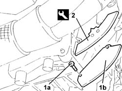
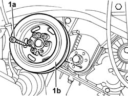
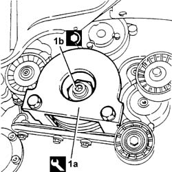
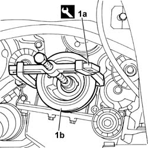

1092A10 Crankshaft PULLEY - R.R. for versions with air conditioner
- Path
- Procedures > 10 ENGINE > 1092 engine component miscellaneous drives > 1092A CRANKSHAFT PULLEY AND IDLER PULLIES > 1092A10 Crankshaft PULLEY - R.R. for versions with air conditioner
- Kind
- repair procedure (removal / refitting; the operation number is the code)
- Applies to
- engines: 2.0 TB, 2.4 20V, 3.0 V6, 3.2 V6; all production periods
- Interactive page
- https://sloeber94.github.io/elrnDB-lThss/en/#/75341
Applies to: engines: 2.0 TB; all production periods
 Removing
Removing
 Refitting
Refitting- Position the vehicle on a lift.
- Open the boot, remove the cover on the left hand side and disconnect the negative battery lead.
See in Op. 4450B04 Right FRONT WHEEL (one) - R.R.
- Raise the lift.
See in Op. 7055B54 PROTECTION/GUARD under engine - R.R.
See in Op. 7055B42 FRONT WHEEL ARCH LINER (one), left or right - R.R.
See in Op. 7055B64 Engine compartment DUST SEAL in front wheel arch (one), left or right - R.R.
See in Op. 1092G10 Engine components single drive BELT - R.R.
1. Undo the bolts (1a) and remove the lower flywheel guard (1b).
2. Fit the flywheel lock.
 | Description | Code | Function |
|---|---|---|---|
2 | Counter-torque | 1.870.827.000 | Engine flywheel lock |

Applies to: engines: 2.0 TB; all production periods
1. Undo the bolts (1a) and remove the crankshaft pulley (1b).

Applies to: engines: 2.0 TB; all production periods
Refitting
Removing- Position the crankshaft pulley in its housing and secure it tightening the bolts to the recommended torque.
 | Value - daNm | Fastening | Component | Ø |
|---|---|---|---|---|
. | 2.5 | Bolt | CRANKSHAFT PULLEY | M8 |
- Remove the flywheel lock.
| Description | Code | Function |
|---|---|---|---|
. | Counter-torque | 1.870.827.000 | Engine flywheel lock |
- Reposition the guard on the bellhousing and secure it using the bolts.
See in Op. 1092G10 Engine components single drive BELT - R.R.
See in Op. 7055B64 Engine compartment DUST SEAL in front wheel arch (one), left or right - R.R.
See in Op. 7055B42 FRONT WHEEL ARCH LINER (one), left or right - R.R.
See in Op. 7055B54 PROTECTION/GUARD under engine - R.R.
- Lower the lift.
See in Op. 4450B04 Right FRONT WHEEL (one) - R.R.
- Connect the negative battery lead.
- Remove the vehicle from the lift.
Applies to: engines: 2.4 20V; all production periods
Removing
Refitting- Position the vehicle on a lift.
- Open the boot, remove the cover on the left hand side and disconnect the negative battery lead.
See in Op. 4450B04 Right FRONT WHEEL (one) - R.R.
- Raise the vehicle on the lift.
See in Op. 7055B54 PROTECTION/GUARD under engine - R.R.
See in Op. 7055B42 FRONT WHEEL ARCH LINER (one), left or right - R.R.
See in Op. 7055B64 Engine compartment DUST SEAL in front wheel arch (one), left or right - R.R.
See in Op. 1092G10 Engine components single drive BELT - R.R.
1. Undo the bolts (1a) and remove the crankshaft pulley (1b).
Applies to: engines: 2.4 20V; all production periods
Refitting
Removing- Position the crankshaft pulley in its housing and secure it tightening the bolts to the recommended torque.
| Value - daNm | Fastening | Component | Ø |
|---|---|---|---|---|
. | 2.5 | Bolt | CRANKSHAFT PULLEY | M8 |
See in Op. 1092G10 Engine components single drive BELT - R.R.
See in Op. 7055B64 Engine compartment DUST SEAL in front wheel arch (one), left or right - R.R.
See in Op. 7055B42 FRONT WHEEL ARCH LINER (one), left or right - R.R.
See in Op. 7055B54 PROTECTION/GUARD under engine - R.R.
- Lower the vehicle on the lift.
See in Op. 4450B04 Right FRONT WHEEL (one) - R.R.
- Connect the negative battery lead.
- Remove the vehicle from the lift.
Applies to: engines: 3.0 V6, 3.2 V6; all production periods
Removing
Refitting- Position the vehicle on a lift.
See in Op. 4450B04 Right FRONT WHEEL (one) - R.R.
- Raise the vehicle on the lift.
See in Op. 7055B54 PROTECTION/GUARD under engine - R.R.
See in Op. 7055A42 FRONT GRILLE (single) - R.R.
See in Op. 7055B64 Engine compartment DUST SEAL in front wheel arch (one), left or right - R.R.
See in Op. 1092E10 counter-rotating shaft drive toothed belt - r + r
1. Fit the counter-torque tool (1a) and undo the nut (1b) fixing the crankshaft pulley.
| Description | Code | Function |
|---|---|---|---|
1a | Counter-torque for crankshaft | 1.870.646.000 | Lock the rotation of the crankshaft |

Applies to: engines: 3.0 V6, 3.2 V6; all production periods
1. Remove the pulley (1b) using the USAG 454N/2 extractor (1a) or an equivalent tool.

Applies to: engines: 3.0 V6, 3.2 V6; all production periods
Refitting
Removing- Position the pulley on the crankshaft and secure it without tightening the nut.
- Fit the crankshaft lock counter-torque tool.
| Description | Code | Function |
|---|---|---|---|
. | Counter-torque for crankshaft | 1.870.646.000 | Lock the rotation of the crankshaft |
- Tighten the nut fixing the crankshaft pulley to the recommended torque.
| Value - daNm | Fastening | Component | Ø |
|---|---|---|---|---|
. | 23.5 | Nut | CRANKSHAFT PULLEY | M28 X 1.25 |
See in Op. 1092G10 Engine components single drive BELT - R.R.
See in Op. 7055B64 Engine compartment DUST SEAL in front wheel arch (one), left or right - R.R.
See in Op. 7055B42 FRONT WHEEL ARCH LINER (one), left or right - R.R.
See in Op. 7055B54 PROTECTION/GUARD under engine - R.R.
- Lower the vehicle on the lift.
See in Op. 4450B04 Right FRONT WHEEL (one) - R.R.
- Remove the vehicle from the lift.
Topics linked from this page (7)
- 1092E10 counter-rotating shaft drive toothed belt - r + r
- 1092G10 Engine components single drive BELT - R.R.
- 4450B04 Right FRONT WHEEL (one) - R.R.
- 7055A42 FRONT GRILLE (single) - R.R.
- 7055B42 FRONT WHEEL ARCH LINER (one), left or right - R.R.
- 7055B54 PROTECTION/GUARD under engine - R.R.
- 7055B64 Engine compartment DUST SEAL in front wheel arch (one), left or right - R.R.
Topics that link to this page (21)
- 1016C10 SINGLE CYLINDER HEAD - R.R. and Replace gasket
- 1016D20 LEFT CYLINDER HEAD - R.R. and replace gasket
- 1020D12 Crankshaft oil seal FRONT COVER - R.R. and Replace seals
- 1020D18 Front crankshaft COVER OIL SEAL - Replace
- 1032B10 TOOTHED timing BELT - R.R. for timing adjustment or replacement
- 1032B46 TOOTHED DRIVE PULLEY/S - R.R.
- 1032B52 TOOTHED DRIVEN PULLEY (one) - R.R.
- 1032B55 LEFT HEAD TOOTHED DRIVEN PULLIES - R.R. FOR VERSIONS WITH AIR CONDITIONING
- 1032C18 Timing belt MOVING TENSIONER - R.R.
- 1032C32 TIMING BELT FIXED TENSIONER - R.R.
- 1032D12 Timing system protective COVER(S) - R.R.
- 1036C10 CAMSHAFTS in cylinder head - R.R.
- 1036C39 timing variator on cylinder head intake camshaft - r r
- 1036E15 Right cylinder head CAMSHAFTS - R.R. on vehicle for versions with air conditioning
- 1036E54 OIL SEALS FOR LEFT CYLINDER HEAD CAMSHAFTS - REPLACE
- 1036E58 OIL SEALS FOR RIGHT CYLINDER HEAD CAMSHAFTS - REPLACE
- 1036H58 HYDRAULIC TAPPETS (all) - R.R. - Includes R.R. camshaft
- 1056B51 CAM ANGLE SENSOR - R.R.
- 1088C10 WATER PUMP - R.R.
- 1092A12 Crankshaft PULLEY - R.R. for versions with air conditioner
- 1092G15 Engine components single belt MOVING TENSIONER - R.R. with belt removed